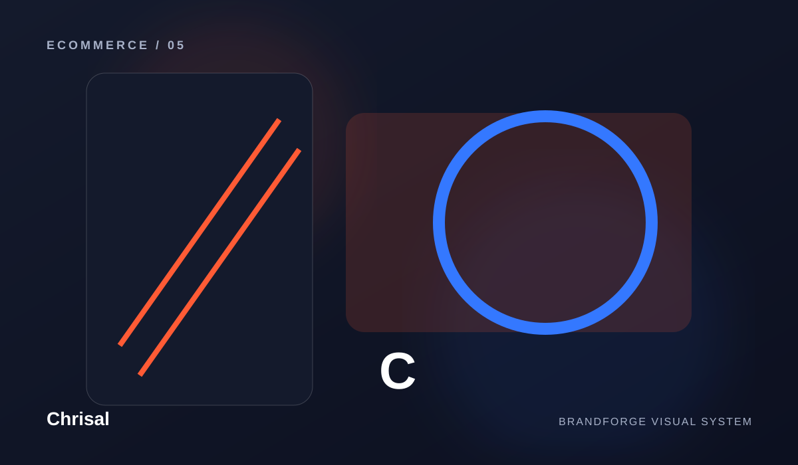
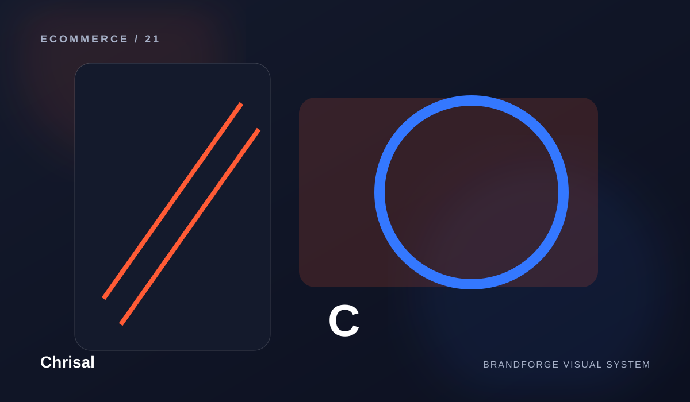
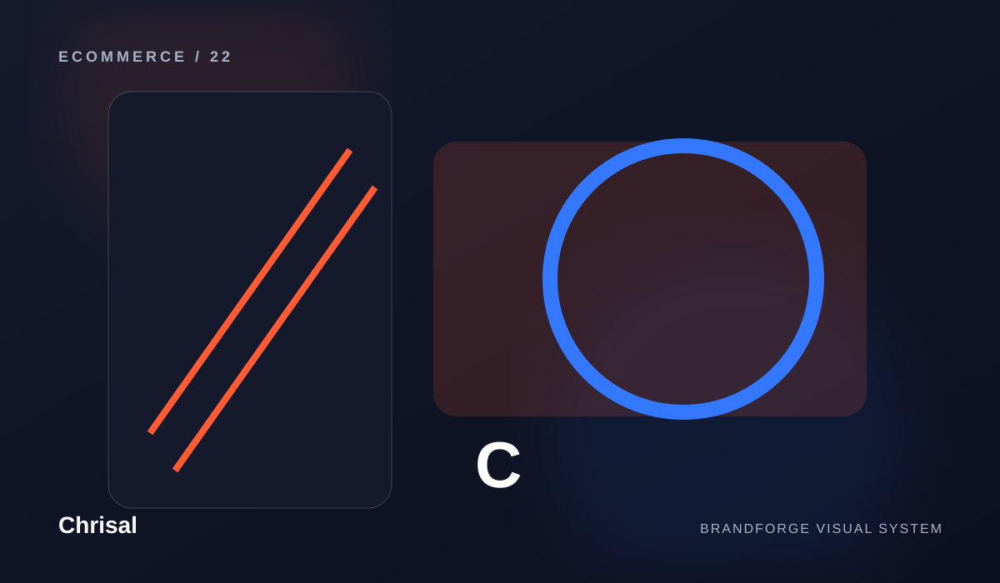
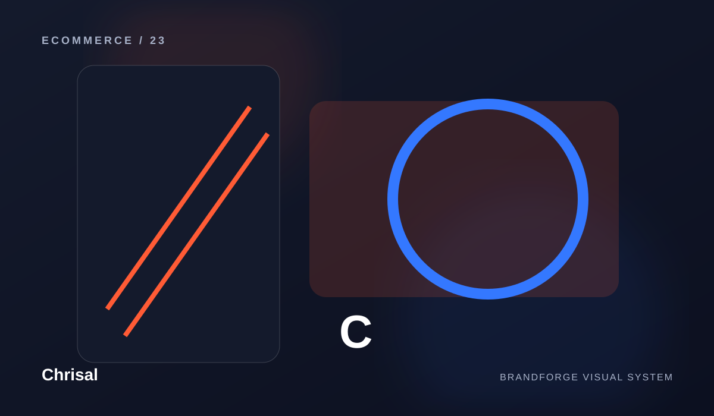
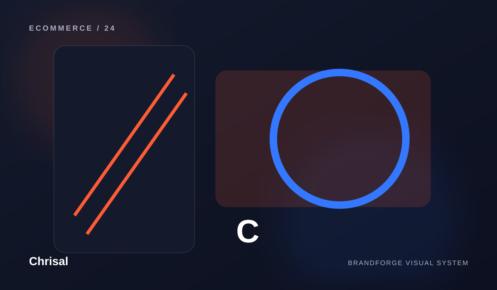
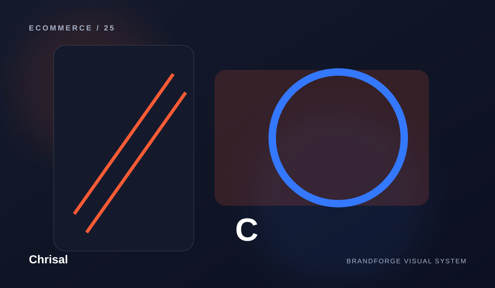

Chrisal
Capabilities built to work together.
Chrisal is organized as a connected system. Each area has its own role, but the experience becomes stronger when the pieces share one direction.


Shop
Shop is treated as part of the complete Chrisal experience — designed to clarify the system while keeping the experience clear, useful, and maintainable.
Explore capability ↗
Collections
Collections is treated as part of the complete Chrisal experience — designed to clarify the system while keeping the experience clear, useful, and maintainable.
Explore capability ↗
New Arrivals
New Arrivals is treated as part of the complete Chrisal experience — designed to strengthen the system while keeping the experience clear, useful, and maintainable.
Explore capability ↗
Brand Story
Brand Story is treated as part of the complete Chrisal experience — designed to connect the system while keeping the experience clear, useful, and maintainable.
Explore capability ↗
Support
Support is treated as part of the complete Chrisal experience — designed to organize the system while keeping the experience clear, useful, and maintainable.
Explore capability ↗CONNECTED BY DESIGN
One capability should strengthen the next.
Instead of presenting a disconnected list of services, the site explains how the different areas can reinforce one another. That creates a clearer story and a more professional path through the brand.